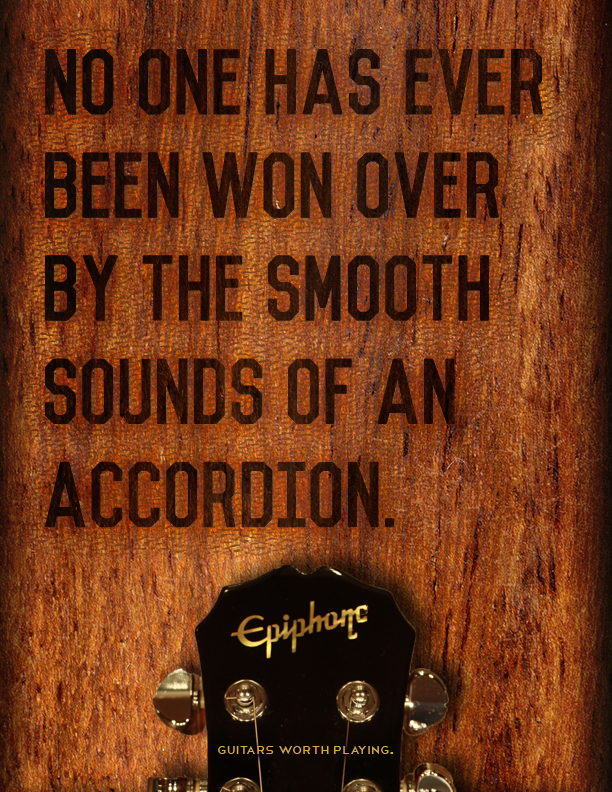
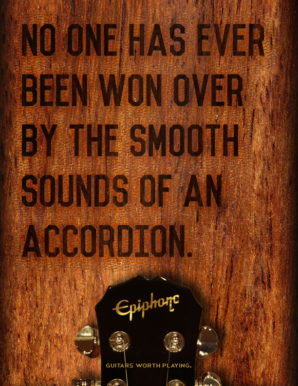
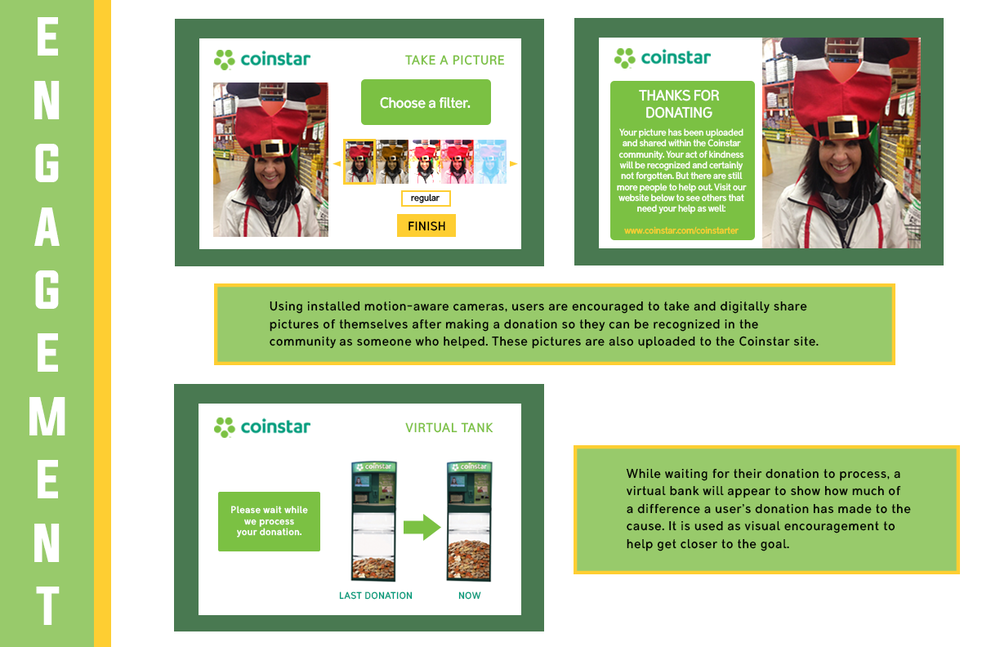
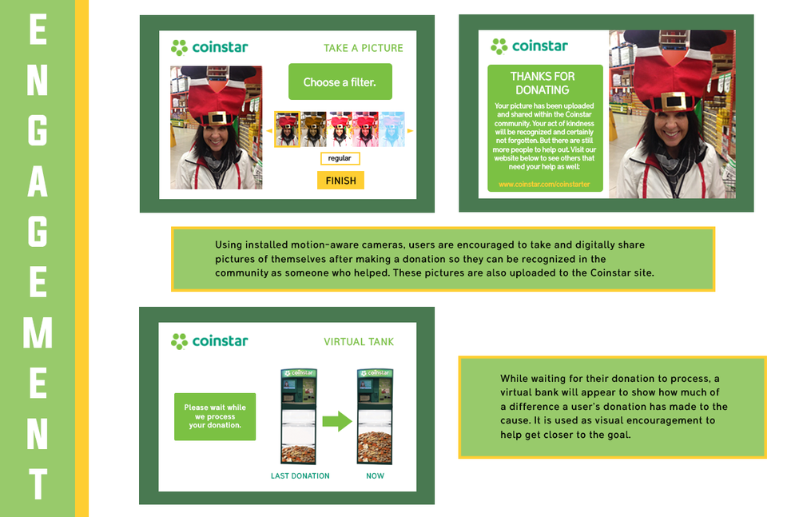

DESIGN
My past designs in graphic and advertising.
Cookout is a popular fast food chain amongst the Southern coast college crowd. Its advertisement is entirely done by word-of-mouth. But if it were to have proper advertisement, it would highlight the many unique aspects that only Cook Out can offer that no other fast food restaurants can't.


How do we get people to be interested in investing their time to learning how to play a guitar? By highlighting how the guitar is regarded as a universally appealing music instrument compared to other less "cool" counterparts.
 


Coinstar Machines have only one function: to count accumulated and unspent change/coins into cash vouchers. What are some proactive ways to increase its usage beyond its original design purpose? One possible solution: Giving the users the option to donate their unspent change/coins to a local cause.
 

Working as the marketing consultant for a 3-D Printing Company, I designed promotional materials that were used for circulation to make locals aware of Third Surface's promotional activities.


As a design intern for an ad agency that specializes in senior living, I’ve created various graphics to aid and inform seniors and their loved ones of relevant upcoming events and information. These graphics ranged from pamphlets, newsprint, ads, infographics, etc.